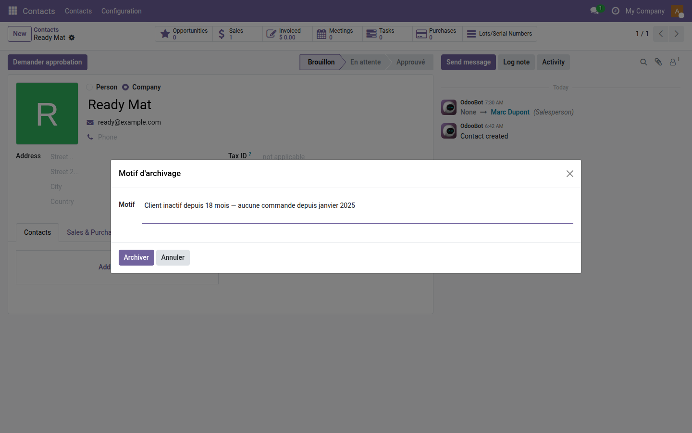
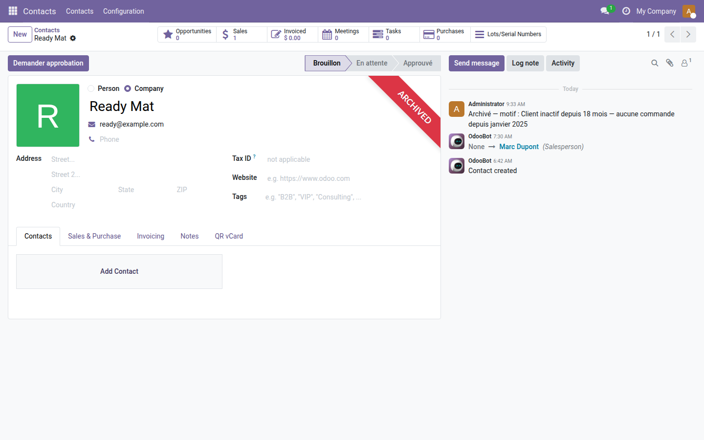

Mandatory Archive Reason
Always know why a contact was archived — the reason is captured before the action and kept in the chatter.
In standard Odoo, archiving a contact requires no confirmation. In one click, the contact vanishes from the active list — no trace, no explanation, no identified owner. When a salesperson finds an "archived" customer months later, nobody knows whether it was intentional, a mistake or a temporary decision. This opacity complicates audits, muddles CRM history and makes archiving decisions impossible to justify.
What it adds
- 🛡️ No archiving without justification — an input dialog opens automatically; the reason field is required, and the action cannot proceed without it.
- 📋 Reason recorded in the chatter — the reason is posted automatically in the contact's chatter as "Archived — reason: …", visible to the whole team.
- ⚡ Zero configuration — nothing to set up after installation; the module is active immediately on all contacts.
- 🔁 Multi-selection compatible — works whether you archive a single contact or a multiple selection from the list view.
Real screenshots
1. Reason input dialog — required before any archiving
The module intercepts the archive action and opens this wizard; it cannot be confirmed without a reason.

2. Reason kept in the chatter — full traceability
After confirmation, the contact is archived and the reason automatically appears in its chatter, visible to the whole team.

Why install it
- Every archiving becomes traceable and auditable — useful for ISO-certified teams, accounting firms or any organization that must justify its operations.
- No more accidental or unjustified archiving: the input step creates intentional friction that prevents handling errors.
- The history of reasons remains viewable directly from the contact form through the chatter — no extra view or report to configure.
- Open source module (LGPL-3) — works right after installation, with no subscription or configuration.
License LGPL-3 — compatible with Odoo 19.0. Support: apps@odooskills.com.